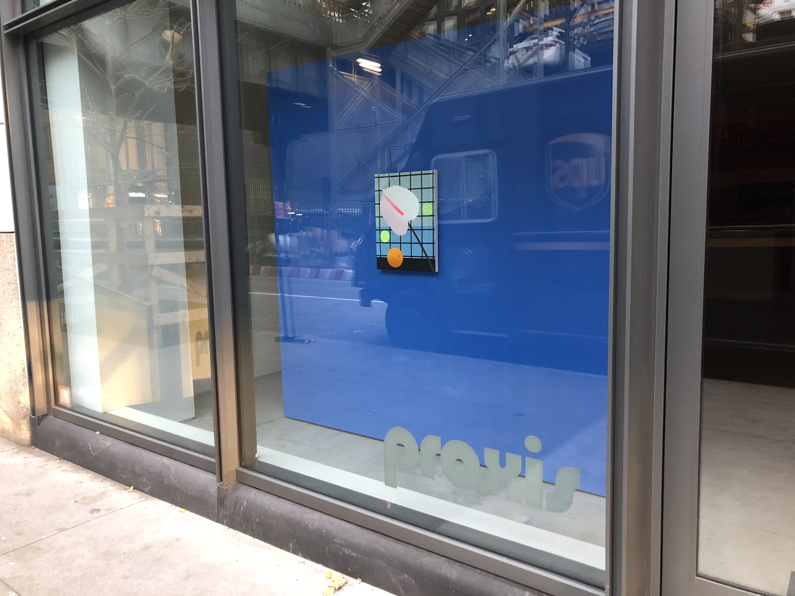

On a casual stroll through Chelsea, a popular neighborhood in Manhattan, one will find more than a few vacant storefronts.
In many of these now unoccupied pieces of real estate were once art galleries that shaped the artistic scene in this neighborhood.
"There is a direct link between gallery openings and closings and gentrification," said Jennifer Lena, associate professor of arts at Columbia University.
An incessant trend of rising rents, along with changing consumer behavior, has forced a collection of mid-size art galleries in New York City to close their doors for good.
"Rent increases and high relative rents generally lead to gallery closures," Lena said. "That is, smaller and less well financed galleries will close."
As reported in The New York Times, mid-size galleries are falling behind larger entities, such as Gagosian, because of "high-priced real estate in gallery neighborhoods like Chelsea, and the proliferation of expensive art fairs, where collectors now do most of their browsing and buying."
Experts are calling this process hypergentrification, which is defined as an accelerated level of gentrification because it displaces affluent businesses and residents in favor of large, behemothic corporations, according to Alan Ehrenhalt of Governing, a digital publication covering state and local governments.
"Rent increases and high relative rents generally lead to gallery closures."
A total of 33 galleries have closed in the past four years in New York City neighborhoods historically popular for the arts, like Williamsburg (11206, 11211), Soho (10012, 10013) and the much-beloved Chelsea (10001, 10011).
"If a neighborhood experiences rapid increases in per square foot rental prices, a bundle of galleries can close at once," Lena said.